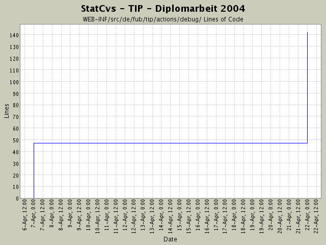

Summary Period: 2004-04-07 to 2004-04-21
[root]/WEB-INF/src/de/fub/tip/actions/debug

Total Lines Of Code:
142 (2004-06-13 13:05)
| Author | Changes | Lines of Code | Lines per Change |
|---|---|---|---|
| hirsch | 2 (100.0%) | 142 (100.0%) | 71.0 |
Umstrukturierung,
BenutzerBearbeiter fügt jetzt neue Benutzer hinzu und
meckert, wenn man ein bestehendes Login nochmals
angeben will.
95 lines of code changed in:
VO:
alle ViewObjekte implementieren jetzt auch
java.io.Serializable - nur so geht später mal RMI!
Anonsten Umstrukturierung und Javadoc in action-Package -
Unterpakete angepasst an Menüstruktur
(nur Skelett gelegt, noch nichts geändert)
47 lines of code changed in:
Generated by StatCvs v0.2-dev